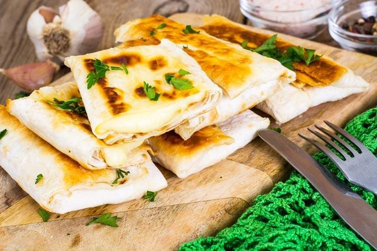
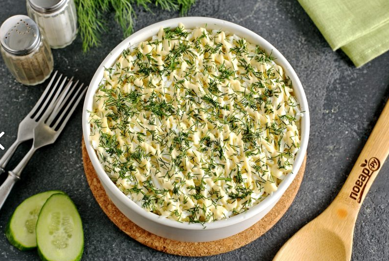
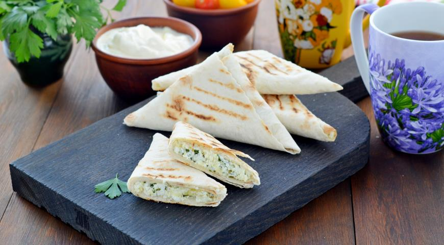

1. Лаваш с сыром
Лаваш с сыром – отличный вариант для завтрака или перекуса, можно подать к первым блюдам, взять с собой на пикник или на прогулку. Начинка для лаваша может быть самой разнообразной. Сырная начинка – одна из популярных. Лаваш с сыром обжаривается в сковороде на масле, на нем образуется невероятно вкусная хрустящая корочка, сыр внутри расплавляется и тянется.


1. Натрите сыр и вареные яйца, мелко нарежь лук и зелень, а потом смешайте все в одной миске со сметаной и специями. Дай начинке немного настояться и если вдруг появилась жидкость, обязательно ее слейте.

2. Разрежьте лаваш на одинаковые прямоугольники, выложите начинку и аккуратно сверните конвертики. Обжарьте несколько минут с каждой стороны на сковородке, слегка сбрызнутой маслом.